Torque and moment of force — how a push becomes a turn
Angular Kinetics 1
By the end of this lecture you should be able to…
Define torque as force times the perpendicular distance from its line of action to an axis
Find a moment arm by either route — resolve the distance or resolve the force — and get the same answer
Assign a sign with the right-hand rule, and add torques that act about the same axis
Explain why the same muscle force produces a different joint torque at a different joint angle
Distinguish an external moment from the internal moment that opposes it
Read a joint moment graph through the gait cycle and name the muscle group responsible
Account for lateral, anterior and posterior trunk bending as ways of moving a line of action
Angular Kinetics 1
A force does not only push things along
We have been treating a force as something that causes translation. But a
force can be applied almost anywhere on a rigid object, and when it is, it also tends to
cause rotation.
Torque is the tendency of a force to rotate an object about an axis.
Also called the moment of force, or simply the moment.
Think of it as a rotary force — the turning effect of a push.
A torque can be present even when nothing moves. Standing still on one leg,
the ground is applying a large torque about your hip, and your abductors are applying
an equal and opposite one.
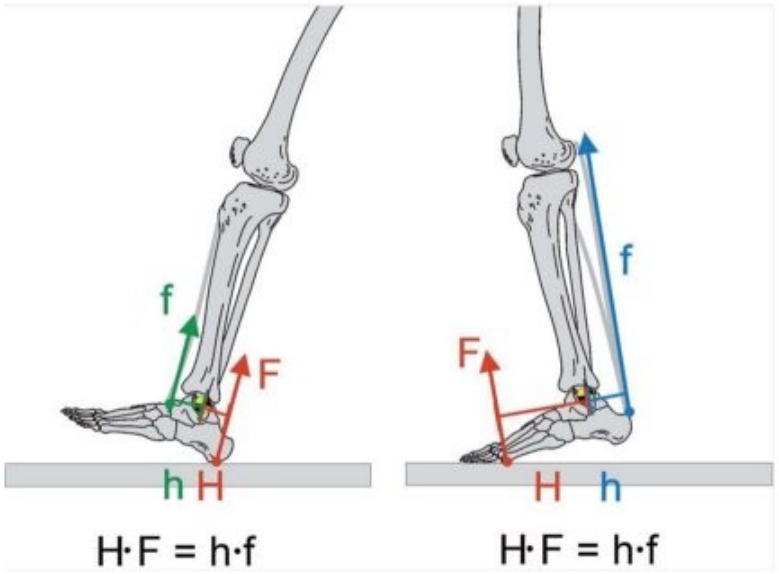
The foot is a lever. The ground pushes up with F at a
distance H from the ankle; the Achilles pulls with f at a much
shorter distance h. Nothing is rotating, and yet H·F = h·f.
Angular Kinetics 1
The definition
T = F · d⊥
M = F · d⊥
Torque is the result of a force F applied a certain
perpendicular distance d⊥ from an axis of rotation.
T and M are the same quantity; both letters are in common use.
Units. Newtons times metres: N·m. Not joules
— a joule is also a newton-metre, but it is a force moved along its own line, which
is a completely different thing. Keep torque in N·m and never call it a joule.
Torque is influenced by three things, and only three:
the magnitude of the force, its line of action, and its
point of application. The last two together fix d⊥.
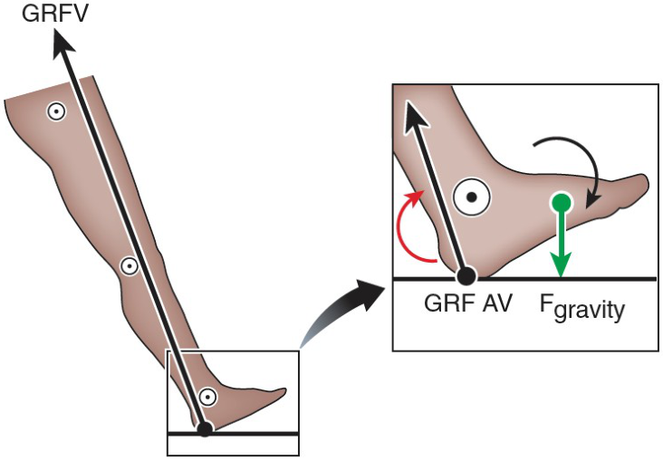
The ground reaction force vector has a magnitude, a line of action and a
point of application — the centre of pressure. Change any one and the moment at the
ankle changes.
Angular Kinetics 1
The moment arm
The moment arm is the perpendicular distance from the
line of action of the force to the axis of rotation.
It is measured to the line, extended as far as you like in both directions —
not to the point where the force happens to be applied.
A force whose line passes through the axis has a moment arm of zero and
produces no torque, however large it is.
The axis need not be a hinge. It may be fixed, like the pin of
a seesaw or the axle of a door. Or it may be free — a diver in the air rotates about her own
centre of gravity, with nothing holding her there at all.
Naming the axis first is not a formality. The same force has a
different moment arm, and often a different sign, about two different axes. Half of all
wrong answers in this topic are answers to a different question.
Angular Kinetics 1
Two routes to the same number
Angular Kinetics 1
Torque is a vector
A torque has a magnitude and a direction, so it is a vector. Its direction is along the
axis of rotation, not along the force.
The right-hand rule. Curl the fingers of your right hand in the
direction the force tends to turn the object. Your thumb points along the torque vector.
Counter-clockwise — thumb out of
the page — is positive.
Clockwise — thumb into the page — is
negative.
This is a convention, not a law. It is the usual one, and this course will
hold to it, but a paper may choose the other and will say so. Always read the axis labels on
someone else's graph before you interpret the sign.
Angular Kinetics 1
Adding torques
Torques about the same axis add, with their signs.
ΣM = M1 + M2 + …
Two torques in the same direction reinforce.
Equal and opposite torques sum to zero and the object does not start to rotate —
though both forces are still there, and both are still being resisted by the structure.
A small force on a long moment arm balances a large force on a short one. That is a
lever, and it is the whole of the seesaw.
Only torques about the same axis may be added. Two torques about different
axes are two different quantities and adding them is meaningless.
Angular Kinetics 1
Balancing a lever
Angular Kinetics 1
Worked example — the moment about O
A force of 75 N acts at the end of a bar 3 m
long, at 30° to the perpendicular. Find the moment about the axis at O.
Solution A — resolve the distance. Find the perpendicular
distance from O to the line of action, then multiply by the whole force.
d⊥ = (3 m)(cos 30°) = 2.6 m
MO = (75 N)(2.6 m) = 195 N·m
Note which quantity the cosine is applied to. Here the force is used whole and
the distance is cut down to the part of it that is perpendicular to the force.
Angular Kinetics 1
Worked example — the same answer the other way
Solution B — resolve the force. Split the force into a
component along the bar and one across it. Only the perpendicular part turns anything;
multiply it by the whole distance.
F⊥ = (75 N)(cos 30°) = 65 N
MO = (65 N)(3 m) = 195 N·m
Both routes give 195 N·m — use whichever is easier to draw,
never both at once. The other component, 37.5 N, runs along the bar through O: no
moment arm, no moment, but it is still compressing the bar.
Angular Kinetics 1
Worked example — and the direction
A magnitude is only half an answer. Apply the right-hand rule: curl your
fingers the way the force tends to turn the bar about O.
The force turns the bar clockwise.
Thumb points into the page.
MO = −195 N·m
Written as a vector, the moment points along the axis of rotation — into the
page — which is at right angles to both the force and the moment arm. Torque vectors never
point the way the force points.
Angular Kinetics 1
Torque and muscular force
The turning of our limbs is caused by muscular contraction. A muscle attaches a certain
distance away from a joint — the axis of rotation — and pulls.
The tendon tells you the line of action. A muscle can only pull along
its own line, and the tendon is where you can see that line.
The insertion gives the point of application.
The moment arm is then the perpendicular from the joint centre to the tendon's line —
a few centimetres, usually, and always much shorter than the limb it moves.
Short moment arms are the body's bargain: a muscle that shortens
a little moves a hand a long way, and pays for it by having to pull very hard.
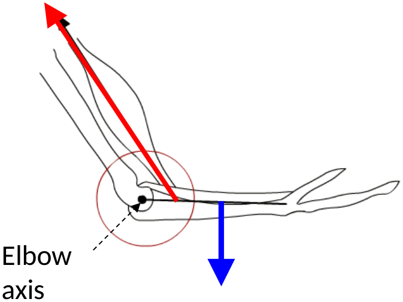
The red arrow is the muscle's line of action. The blue arrow is the
load. Both make a moment about the same elbow axis, in opposite senses.
Angular Kinetics 1
Moving the limb changes the moment arm
Moving a limb changes the orientation of the muscle's line of
action relative to the bone, and so changes the moment arm.
The same muscle force therefore produces a different joint
torque at a different joint position. This is why you are strong at some angles and
weak at others — and it is a purely geometric effect, before any physiology.
d⊥ = r · sin θ
where r is the distance from the joint centre to the
insertion and θ is the angle between the tendon and the bone. At
θ = 90° the moment arm is the whole of r; at 0° or 180° it is nothing.
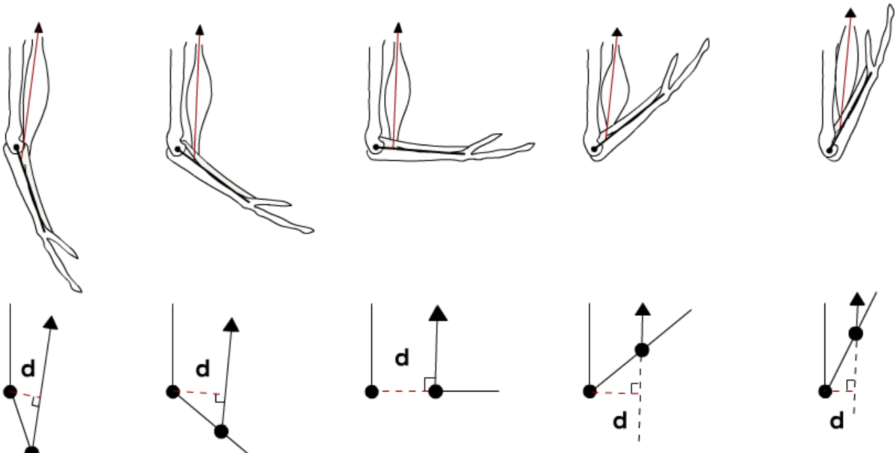
Five positions, one muscle force. The bottom row is the same picture
with everything but the geometry taken away.
Angular Kinetics 1
The biceps through the range
Angular Kinetics 1
Example problem — the biceps at the elbow
The biceps brachii develops a force of 780 N. It inserts
0.03 m from the elbow joint axis, and the tendon lies at
55° to the forearm.
Find the torque about the elbow.
Start by drawing a free body diagram. Mark the
axis, the point of application, the force with its direction, and the angle. Extend the
line of action as a dashed line well past the insertion — you will need it to find the
perpendicular.
Do not reach for a formula until the diagram is drawn. Nearly every error in
this kind of problem is a geometry error that a careful sketch would have caught.
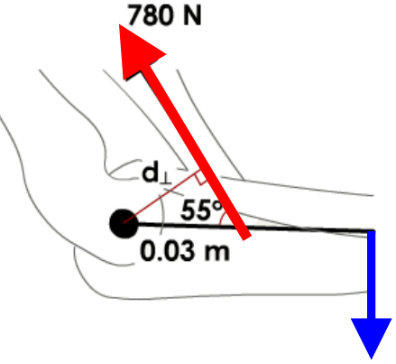
Angular Kinetics 1
Step 1 — the moment arm
The moment arm is the perpendicular distance from the elbow axis to the
line of action of the muscle force.
d⊥ = r · sin θ
d⊥ = (0.03 m)(sin 55°)
d⊥ = 0.0246 m
Just under two and a half centimetres — noticeably less than the three
centimetres the tendon actually inserts at, because the tendon is pulling at an angle
rather than squarely across the bone.
Angular Kinetics 1
Step 2 — the torque
M = F · d⊥
M = (780 N)(0.0246 m)
M = +19.17 N·m
The biceps flexes the elbow, turning the forearm counter-clockwise as drawn,
so by the right-hand rule the torque vector points out of the page and the sign is
positive.
Check it the other way.
F⊥ = 780 sin 55° = 639 N, and 639 N × 0.03 m = 19.17 N·m. Same answer,
as it must be.
Angular Kinetics 1
Why we go to this trouble
In biomechanics we quantify forces and torques in order to answer questions
we cannot answer by looking:
How will the joint move? The net moment at a joint, not any single
muscle, determines the angular acceleration.
How will the body translate and rotate? Linear kinetics gave the first
half of that; this is the other half.
What is happening to the tissues? Bones, cartilage, tendons and
ligaments all fail at loads we can estimate but cannot see.
How hard is a muscle working? We cannot measure muscle force in a
living person without surgery. We can estimate it, and a moment arm is how.
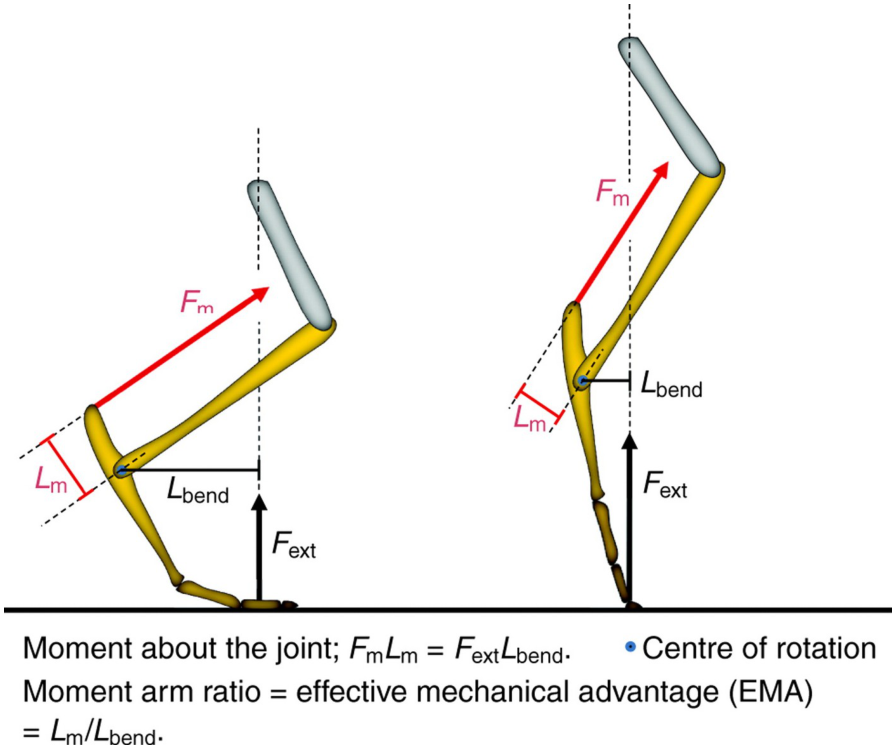
Moment about the joint: FmLm = FextLbend.
The ratio of the two moment arms is the effective mechanical advantage.
Angular Kinetics 1
Inverse dynamics
We cannot measure the force in a muscle, or the moment at a joint, directly.
We can measure the things at the outside of the system — where the segments are, and what
the ground is doing — and work inwards.
That is inverse dynamics: from the measured motion and the
measured external forces, compute the net moment that must have been acting at each joint.
Start at the ground with the force plate, and the foot.
Solve the foot, and pass the result up to the ankle.
Solve the shank, and pass it up to the knee. Then the thigh, and the hip.
It gives the net moment — one number per joint,
the sum of every muscle, ligament and contact force there. It cannot tell you which muscle
made it, or whether an antagonist was active at the same time.
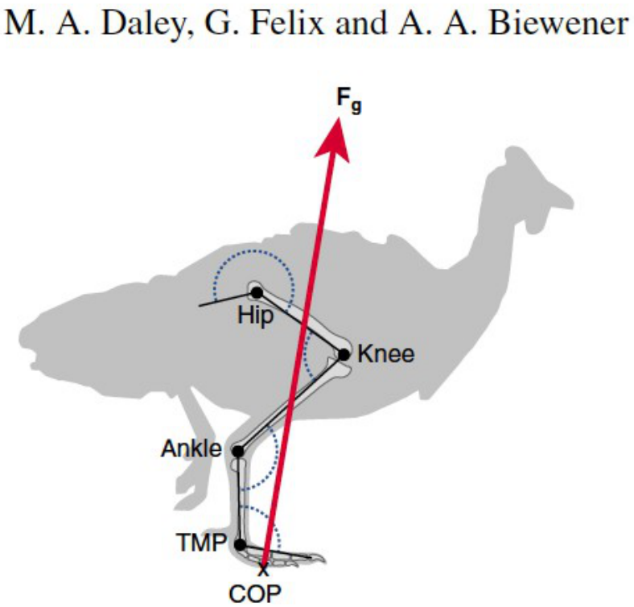
The measurement, on an animal: joint centres from markers, the force
vector from a plate, and everything else computed. Daley, Felix & Biewener.
Angular Kinetics 1
External moments and internal moments
Two moments at every joint, and they are not the same thing.
External moment — made from
outside: gravity and the ground reaction force. What the world is doing to the joint.
Internal moment — made from
inside: muscles, and at the end of range ligaments and capsule. The body's answer.
When the joint is not accelerating, these are equal and
opposite. An external flexor moment is met by an internal extensor moment.
Gait graphs almost always plot the internal
moment, because that is the one that names a muscle group. A curve labelled "extensor"
means the extensors were working — so the external moment was trying to flex.
Angular Kinetics 1
Which side of the joint does the line pass?
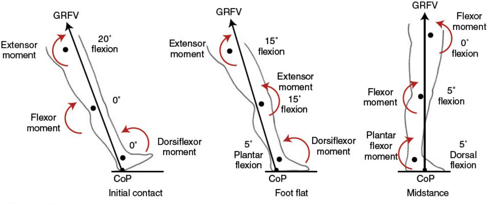
At initial contact the vector passes behind the ankle, so the
external moment tends to plantarflex it and the dorsiflexors answer.
At the same instant it passes in front of the knee and hip, tending to extend them.
In early stance it swings behind the knee — tending to flex it — and
the quadriceps answer. It moves ahead of the knee again by late stance.
From about midstance it passes behind the hip and stays there until
swing begins.
Angular Kinetics 1
The measured vector, and the moment it makes
Angular Kinetics 1
How much is the ground, and how much is the limb?
If you know the ground reaction force and where each joint is, you can compute
the moment the ground alone makes about that joint. Is that the joint moment?
Compare the ground-alone estimate with the full inverse-dynamics result,
on the same measured stride:
Ankle — nearly the whole story. The two agree to within about ten
per cent through stance. The foot is light and barely accelerates, so there is almost
nothing else to account for.
Knee — the right shape, the wrong size. The ground alone overestimates
the peak by roughly half, because the shank and foot have weight of their own and are
being swung.
Hip — wrong. Not merely too large: for much of stance it has the wrong
sign. Everything below the hip has to be carried and accelerated, and that
dominates.
Angular Kinetics 1
Reading a moment–time graph
A moment–time graph is read in two steps: which side of zero,
and how far from it.
The sign names a direction of rotation, and at a joint that means a muscle
group — which one depends on the joint and the axis:
Flexion / extension — the sagittal plane, and nearly everything in
this lecture.
Inversion / eversion — the frontal plane at the foot.
Internal / external rotation — the transverse plane.
Every joint has a moment about all three axes at once. We plot the
sagittal one because in walking it is much the largest, not because the others are zero.
Before reading any moment graph, find out three things:
internal or external, which way is positive, and whether it is per kilogram. All three
change the number on the axis.
Angular Kinetics 1
Gait kinetics — contact to midstance
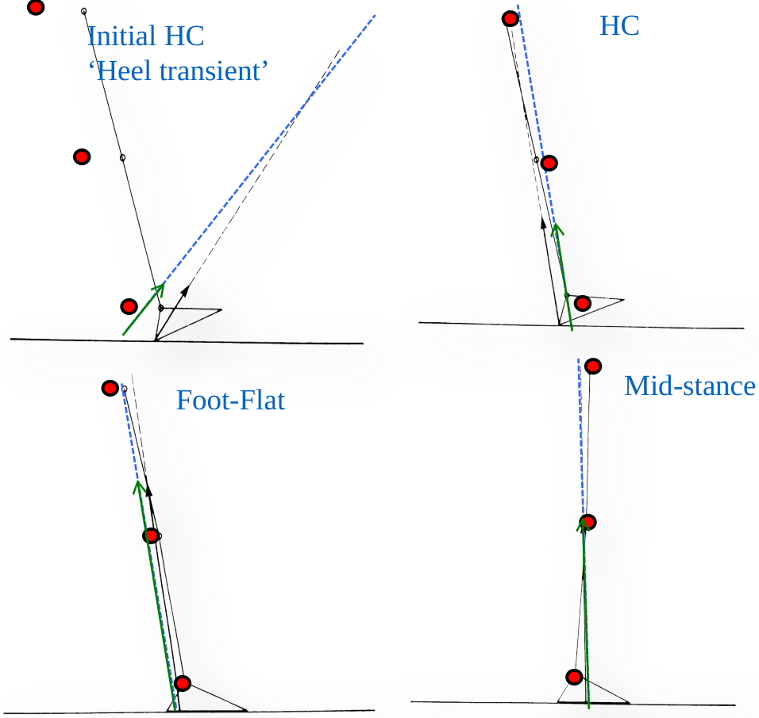
To account for a joint moment you need both the external
force and what the muscles are doing about it.
Initial heel contact — the "heel transient", a very brief spike as the
heel decelerates. It is largely passive, over in a few milliseconds, and the limb has no
time to respond to it.
Heel contact — the vector is steeply inclined and passes well in front
of the hip. The hip extensors are already working.
Foot flat — the vector has swung behind the knee. Quadriceps.
Midstance — the vector is nearly vertical and passes close to the
knee, so there is little to do there; meanwhile the centre of pressure has moved forward
of the ankle and the plantarflexors begin to build.
Angular Kinetics 1
Gait kinetics — heel-off to toe-off
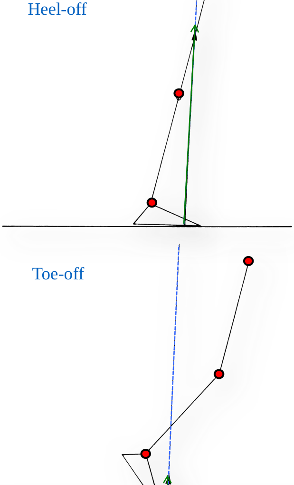
Heel-off — the centre of pressure is now well forward under the
forefoot while the ankle is still behind it. The moment arm at the ankle is at its largest
and the vertical force is near its second peak at the same time. This is where the
plantarflexor moment peaks, and it is by far the largest moment anywhere in the leg.
Toe-off — the limb is unloading. The force falls away to nothing over
the last few per cent of stance, and with it every moment the ground was making.
Two things multiply to make the ankle peak: a large
force and a long moment arm, arriving together. Either one
alone would be unremarkable.
Angular Kinetics 1
Angles, moments and muscles, one stride
Angular Kinetics 1
What the three panels are for
A joint moment on its own is ambiguous. Read with the angle and with the
muscle activity, it is not.
Moment and movement in the same
direction — shortening. Concentric, doing positive work on the body.
Moment and movement in opposite
directions — lengthening under load. Eccentric, absorbing energy.
Most of what the leg does in stance is the second kind: the quadriceps at
loading response and the plantarflexors through midstance both lengthen while resisting,
and only the plantarflexors turn concentric at the end.
The product of moment and angular velocity is joint
power — positive for generation, negative for absorption. That is the next
lecture.
The same four instants. Which side of the joint the line falls on gives
the sign; the angle panel tells you which way the joint was going at the time.
Common gait abnormalities
Three ways of moving a line of action, and what each one buys
Angular Kinetics 1
Lateral trunk bending
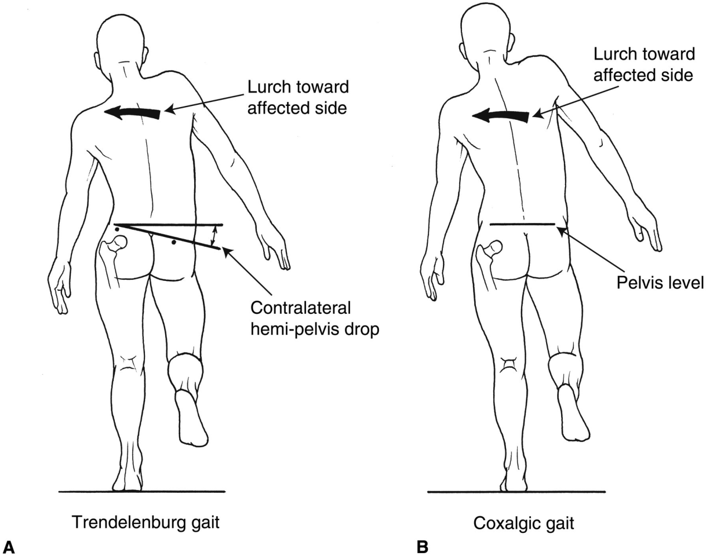
Bending the trunk towards the side of the supporting limb
during stance is lateral trunk bending, or ipsilateral lean.
Most commonly seen in:
Trendelenburg gait — the abductors on the stance side cannot hold the
pelvis, so the opposite hemi-pelvis drops and the trunk lurches to compensate.
Coxalgic gait — "painful hip". The pelvis stays level; the lean is
there to reduce the load, not because the pelvis cannot be held.
The lean is the same in both. What distinguishes them is whether
the pelvis drops with it — which is why you watch the pelvis, not the shoulders.
Angular Kinetics 1
Shifting the centre of gravity
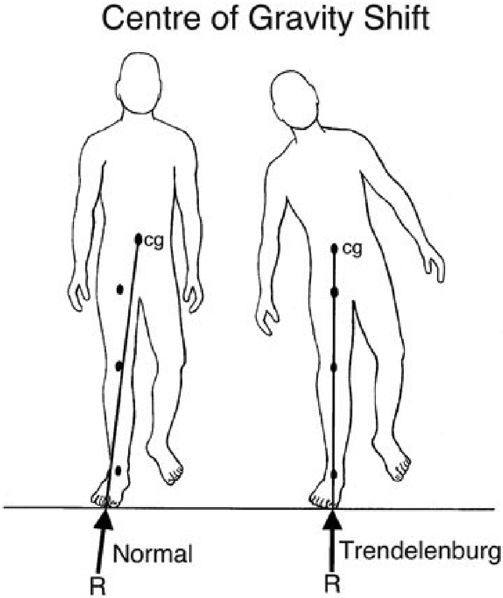
Shifting the body's centre of gravity more vertically over the hip
joint reduces the torque that the ground reaction force makes about that hip.
Nothing about the force has changed. The person still weighs the same, and
the ground still pushes up with the same magnitude. What has changed is the
moment arm: the perpendicular distance from that line to the hip.
M = F · d⊥ → halve d⊥,
halve M
And because the abductors must match that moment on a very short lever of
their own, a small change in d⊥ makes a large change in muscle force.
Angular Kinetics 1
The arithmetic of the lurch
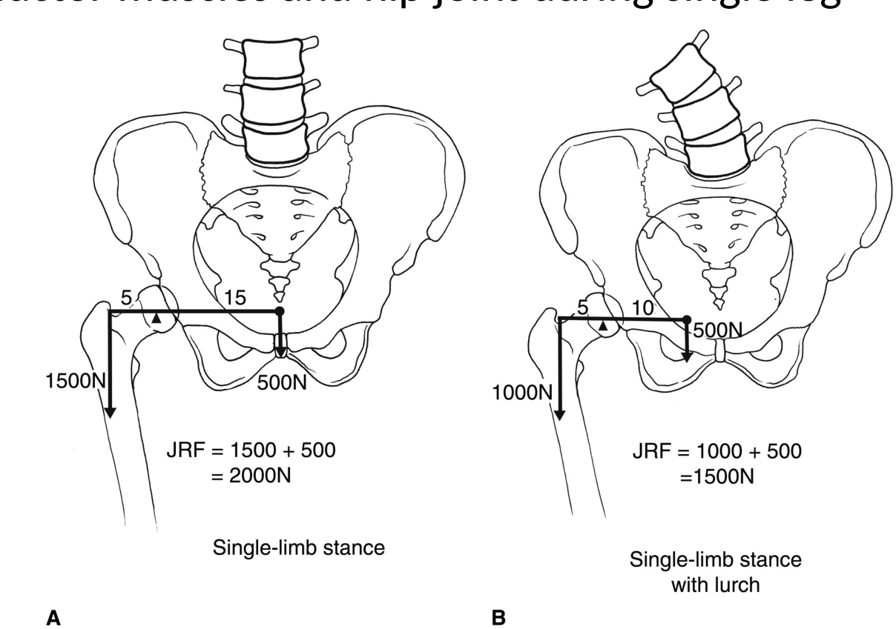
Single-limb stance. Body weight above the hip acts 15 units
from the joint; the abductors act 5 units the other side.
Fab × 5 = 500 N × 15
Fab = 1500 N
JRF = 1500 + 500 = 2000 N
With the lurch, the body weight arm falls to 10 units.
Fab × 5 = 500 N × 10 → 1000 N
JRF = 1000 + 500 = 1500 N
Common causes: painful hip (osteoarthritis, rheumatoid
arthritis), hip abductor weakness, leg-length discrepancy, abnormal hip joint.
Angular Kinetics 1
What a lean is worth
Angular Kinetics 1
Anterior trunk bending
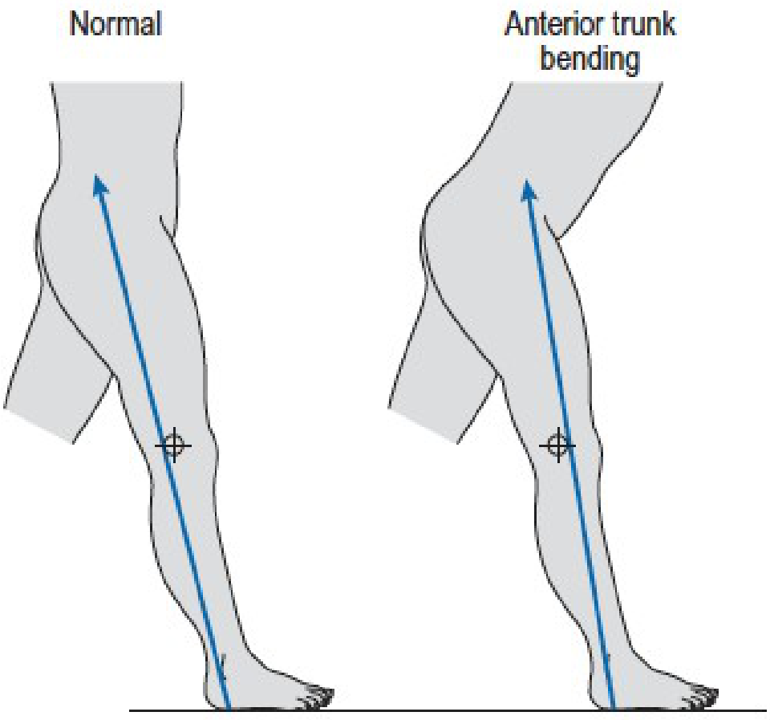
The subject flexes the trunk forwards early in stance.
Normal. In early stance the line of action of the ground
reaction force passes behind the knee axis. The external moment tends to flex the
knee, and the quadriceps oppose it with an internal extensor moment.
If the quadriceps are weak or paralysed, that external
flexor moment would collapse the knee. Leaning the trunk forward moves the body's centre of
gravity ahead of the knee, carrying the line of action with it.
Now the ground is extending the knee rather than flexing
it. The joint is held by its own posterior structures, and the quadriceps are not needed
at all.
Angular Kinetics 1
Posterior trunk bending
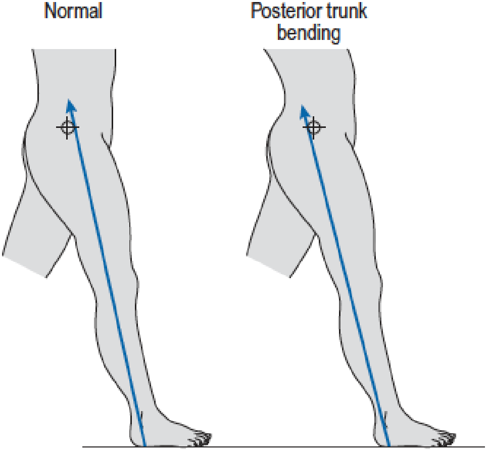
The subject extends the trunk backwards early in stance.
Normal. In early stance the line of action passes
in front of the hip axis, so the external moment tends to flex the hip and the hip
extensors — gluteus maximus and the hamstrings — oppose it.
If gluteus maximus is weak or paralysed, leaning the trunk
backwards brings the line of action behind the hip axis.
The external moment is now an extensor moment, and the hip
extensors have nothing to do. Sometimes called a gluteus maximus lurch.
Angular Kinetics 1
Moving the line of action
Angular Kinetics 1
What to take away
Torque is force times perpendicular distance. Both words matter —
perpendicular, and to the line of action, not to the point of application.
Either route gives the same answer. Resolve the distance or resolve the
force. Never both at once.
Name the axis first. The same force has a different moment, and often a
different sign, about a different axis.
Joint angle changes the moment arm. The same muscle force makes a
different joint torque at a different position, before any physiology is involved.
External and internal moments are opposite sides of one balance. Gait
graphs plot the internal one, so a curve labelled extensor means the ground was trying to flex.
Which side of the joint the line passes decides the sign — everywhere. It
decides the size reliably only at the ankle; at the hip, the limb's own weight and
acceleration dominate, which is why inverse dynamics exists.
Compensations move a line of action. Lateral, anterior and posterior trunk
bending are one manoeuvre about three different axes, and each unloads a particular muscle at
a price paid somewhere else.
Biomechanics (EPHE 341)
Angular Kinetics 1
Next up: angular kinetics 2 — moment of inertia, angular momentum and joint power
· Measured data: Lencioni et al., level walking